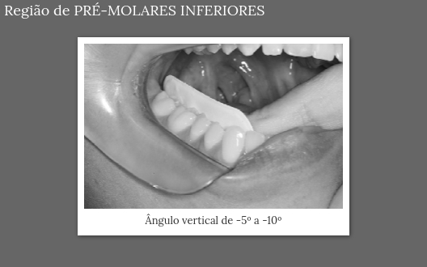

O que é?
As radiografias periapicais são exames radiográficos que capturam imagens detalhadas dos dentes e suas estruturas de suporte, como as raízes e o osso alveolar. São amplamente utilizadas na odontologia para diagnóstico de cáries, infecções, fraturas e outras condições dentais.
Técnicas
Existem duas principais técnicas para a realização de radiografias periapicais:
- Técnica do Paralelismo: Utiliza posicionadores para garantir o alinhamento preciso do sensor ou filme com o eixo do dente e o feixe de raios-X. É a mais recomendada devido à sua precisão.
-
Técnica da Bissetriz: A imagem projetada tem o mesmo comprimento e as mesmas proporções do objeto, desde que o feixe de raios X central seja perpendicular à bissetriz do ângulo formado pelo filme e o objeto.
Posicionamento do Paciente:- Plano Mediossagital (PMS): Linha imaginária que divide o rosto em lados direito e esquerdo; deve estar perpendicular ao chão.
- Plano de Camper: Linha imaginária entre o trágus da orelha e a asa do nariz; deve estar paralelo ao chão.
Técnica da Bissetriz
Técnica da Bissetriz: ângulo formado pelo filme e o dente.
Posicionamento do Filme: Maxila e Mandíbula.
